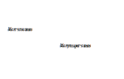

Проведем прямую а и отметим на ней точку О. Эта точка разделяет прямую на две части, каждая из
которых называется лучом, исходящим из точки О. Точка О называется началом каждого
из лучей.
Обычно луч обозначают одной маленькой латинской буквой.

Угол – это геометрическая фигура, которая состоит из точки и двух лучей, исходящих из этой
точки. Лучи называются сторонами угла, а общее начало – вершиной угла.
Развернутый угол – это угол, обе стороны которого лежат на одной прямой. Любой
неразвернутый
угол делит плоскость на 2 части: внутреннюю и внешнюю.
